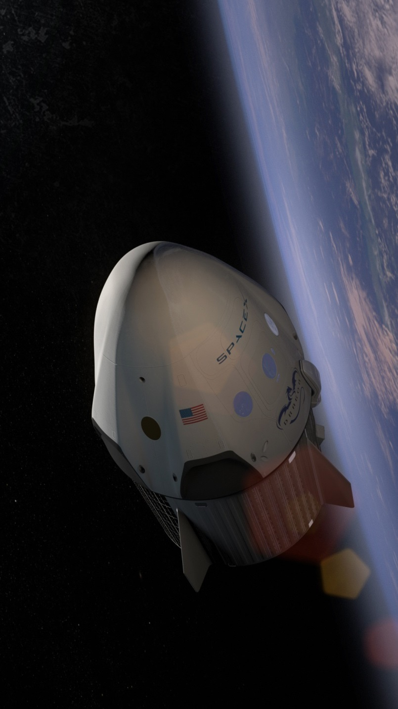

History
Pada tahun 2001, Elon Musk membuat konsep Mars Oasis, sebuah proyek untuk mendaratkan miniatur rumah kaca dan menanam tanaman di Mars. Musk mencoba membeli roket murah dari Rusia tapi gagal menemukan roket dengan harga terjangkau. Lalu, Musk menyadari bahwa ia dapat memulai sebuah perusahaan yang dapat membangun roket terjangkau yang ia butuhkan.
Menurut investor awal Tesla dan SpaceX, Steve Jurvetson, Musk menghitung bahwa bahan mentah untuk membangun roket sebenarnya hanya 3% dari harga penjualan roket pada saat itu. Pada awal 2002, Musk pun mencari staf untuk perusahaan barunya, yang kemudian diberi nama SpaceX.
Rocket & Spacecrafts
FALCON 9
Falcon 9 adalah sistem peluncuran bertenaga roket luar angkasa yang dirancang dan diproduksi oleh SpaceX. Falcon 9 juga bisa membentuk Falcon Heavy yang mempunyai kekuatan 3 kali lebih kuat daripada Falcon 9. Selain itu, roket ini juga menggunakan Vertical Take-Off and Landing (VTVL) atau lepas landas dan mendarat secara vertikal. Bahan bakar Falcon 9 adalah oksigen cair (LOX) dan rocket-grade propelan minyak tanah (RP-1).
FALCON HEAVY

Falcon Heavy sebelumnya dikenal sebagai Falcon 9 Heavy, adalah sistem peluncuran luar angkasa yang dirancang dan diproduksi oleh SpaceX. Falcon Heavy dirancang untuk membawa manusia ke luar angkasa melampaui orbit bumi yang rendah. Falcon Heavy dan kendaraan peluncur Falcon lainnya saat ini siap untuk digantikan oleh BFR (Big Falcon Rocket) pada awal 2020-an.
DRAGON
Dragon adalah pesawat ruang angkasa kargo yang dapat digunakan kembali yang dikembangkan oleh SpaceX. Dragon diluncurkan dengan roket pembawa Falcon 9. Selama penerbangan perdananya pada Desember 2010, Dragon menjadi pesawat ruang angkasa pertama yang dibangun dan dioperasikan secara komersial yang berhasil kembali dari orbit.